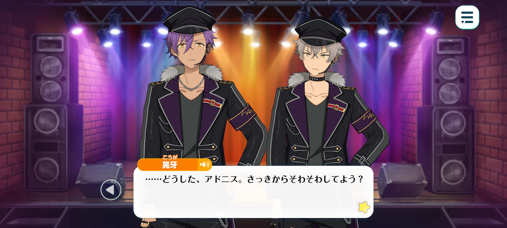
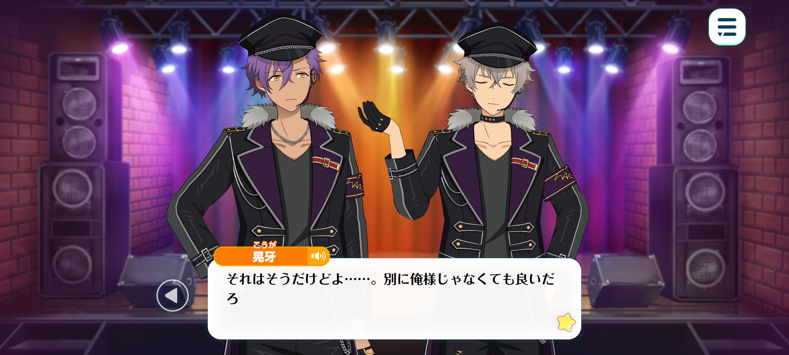
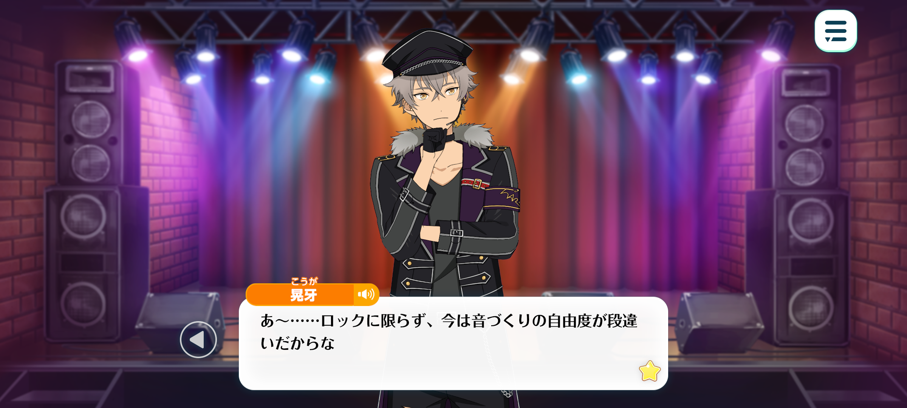
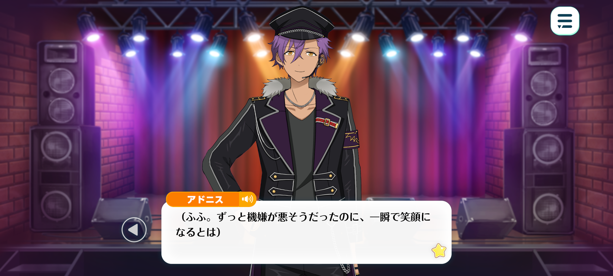

In Memoriam◆Handwriting, Chasing, Rambling
Prologue 1
Season: Autumn
Time: Early October, two years after ES was established.
Location: At the venue before the middle school band contest begins

Adonis: …
Koga: …What’s wrong? You’ve been all fidgety.
Adonis: Seeing the staff running around busy makes me want to help out.
Koga: No need. It’s always like this before a performance
Us gettin’ involved is only gonna slow ‘em down.
They’re used to this. It looks chaotic but they’ll get it all done in time. Best t’stay put.
Adonis: Yes, I suppose you’re right.
Koga: Godddd… sayin’ all that, I am bored as hell/
Why the hell do I hafta judge some bratty kids’ band contest?
Been sat in this folding chair for so long my back’s startin’ to hurt.
Adonis: It’s likely because of poor posture. If you sit further back in the seat, it will reduce strain on your spine.
Koga: No that’s not what I mean.
I’d rather be on stage playin’ my guitar than sat here judgin’ other peoples’ performances.
Adonis: …? You want to get on stage with them, Oogami?
You don’t exactly look like a middle schooler so passing off as one will be rather difficult.
Koga: Gah! That’s not what I mean either!
I mean, I’m way more into makin’ music myself rather than judgin’ other peoples’, actin’ like I’m better than them.
Adonis: Ah…right.
But today’s work specifically asked to hear UNDEAD’s opinion. That’s what Sakuma-senpai said.
I’m quite honoured, actually, that our music can inspire young people in such a manner.

Koga: Yeah I suppose so but… why it gotta be me?
Sakuma-senpai could do this just as well. He’s good at given’ appreciative comments.
He said I was more suited for this ‘n forced it on me.
I don’t care ‘bout comparin’ this ‘n that. I’m no critic, I’m jus’ into rock ‘n roll.
…Whatever. Can’t pull out now so I’ll do the job properly.
Jus’ cos it’s some kids’ performances doesn’t mean I’m gonna go easy on ‘em.
Adonis: I had a feeling you would say that.
You have sat here complaining but you’ve been looking through those documents for a while now.
Koga: Shut it. What else is there to do? Might as well read it.
…Everyone here today has made it through the preliminary rounds already.
There’s no surefire way to win in a contest. You gotta rely on your own hard work—
The kids here are probably so nervous they’re shakin’. But you can’t run away from the stage now.
If I half-arsed this when they’re backstage sweatin’ bullets, I’d look lamer than them.
Adonis: …Oogami is a straight-forward, good guy.
Anyhow, looking at these documents, it seems there are all sorts of different types of music today.
“Electric rock”, “alternative rock”, “pop punk”...
I had no idea there were so many different types of rock. It seems quite difficult to me.

Koga: Yeah~... It’s not jus’ rock, all music nowadays is pretty lax on what you can ‘n can’t do.
With a computer ‘n some software, you don’t even need a real guitar or drums.
There’s even people who compose their own music and perform live shows all by themselves. You can do all sorts of things now.
But…I kinda feel like the prettier it is, the most well-behaved the music is.
Even if the raw sound is a bit rough around the edges, you can still feel their passion ‘n emotions in it. That’s what I prefer anyway.
Well, it all comes down to personal preference though. If it’s popular that means it’s well liked.
Rock’s more about makin’ music so loud that it’ll break the amp—
…Hm?
Oi Adonis! Check out this band’s profile!
Adonis: Hm? Which page?

Koga: Here, look right here! Entry number 12!
“Influenced by their rock-loving father and inspired by overseas rock star MARBLING, they started their band.”
Adonis: …? I’m not familiar with that name. So what?
Koga: Are you a moron? MARBLING is a legendary rock star!
My bad, I shouldn’t have called you a moron. If you’re not into rock then why would you know? There’s loads of stuff I don’t know much about as well.
Anyhow. MARBLING’s gettin’ on in age now. Everytime I go to one of his lives everyone in the crowd is older than me.
It’s pretty uncommon for young people to know about him so for a band to have started because they admired him so much…!
Haha! Who woulda thought that I’d be hearin’ that old man’s name here of all places! I’m glad I came!
Adonis: You’ve leant forward in excitement. This rock star seems special to you, Oogami.
Koga: Hell yeah he is! He’s the typa guy who ain’t swayed by trends ‘n jus’ does whatever he wants. Gramps has been workin’ all his life.
Gyahaha! I can’t wait to see this entry…♪
Fuck! I was so bored ‘n now I can’t wait for these performances~!
Adonis: I think this goes without saying but make sure you listen to everyone else’s performances as well.
Koga: Pfft, don’t hafta tell me that. I’m gonna judge fair and square.
Besides, wouldn’t be fair to entry 12 either.
I can’t wait any longer. Fuckkk, jus’ start already! ♪

Adonis: (Fufu. To think Oogami was in such a bad mood before. In the blink of an eye, he’s smiling.)
(When it comes to rock music, everyone knows exactly what attitude he’ll have.)
...I don’t think I know exactly why but—
I’m also looking forward to their music…♪